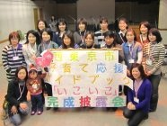
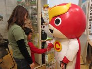
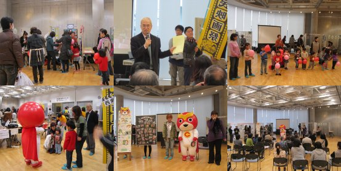
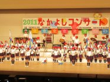
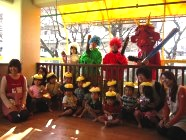
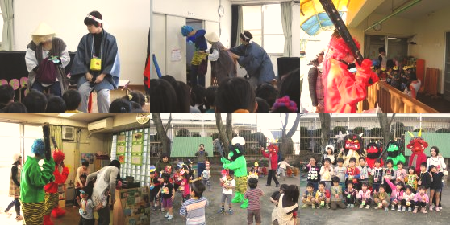
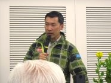
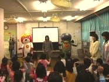

|
田無駅・ひばりヶ丘駅にて青年会議所のスタッフ様、FC東京のサッカー選手の方々やスタッフ様、FM西東京の方々と、義援金の募金活動に参加しました！多くの方々に募金していただき、本当に感謝致します。詳しい集計結果等は青年会議所のHPにて掲載されております。本当にありがとうございます。 |
| 
市民会館にて『子育て応援ガイドブック「いこいこ」完成披露会』に松本さんとキャラ丸くんとドク丸くんとで参加してきました。このガイドブックには実際にキャラ丸くんとドク丸くん、そしてエクラちゃんも載ってます！機会がありましたら皆さん是非見てみて下さいね。 |
| 
文化交流センター「きらっと」にて環境や教育について活動をしている方達の活動内容発表、交流の場に参加させていただきました！エクラのメンバーとキャラ丸くんも一緒に参加。色々な方達の活動内容を知ることができてとても充実した1日でした。  |
| 
群馬県の沼田恵保育園主催、なかよしコンサートにキャラ丸くんとドク丸くんとで参加してきました。小さい子のお遊戯からピアニカや和太鼓、なんとヴァイオリン等々多くの発表会が…！キャラドクもダンスを披露して、最後はみんなで記念撮影！一生懸命に披露していてすてきなコンサートでした。 |
| 
北原保育園にて豆まきに参加してきました！泣いてしまう子もいれば笑ってくれる子も…。でも最後にはみんな笑顔で写真を撮らせてもらえました。これで鬼はやってこないですね！  |
| 
今回は山田周生さん講演会に参加させていただいています！環境に関することについて考えており、廃油をエネルギーにした車で世界一周を終えるなど、とても凄い方です！今後も是非頑張っていただきたい＆応援していきたいと思います。 |
1月21日 興本保育園上映会興本保育園へキャラ丸君とドク丸君とで遊びに行ってきました！ダンスを踊ったりしてみんなノリノリで踊ってくれました。またみんなと会えるといいね！ |